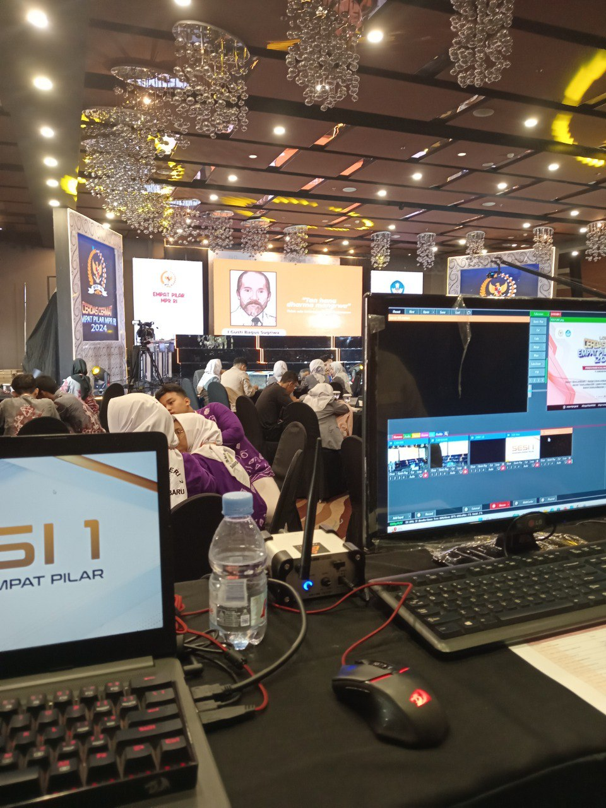
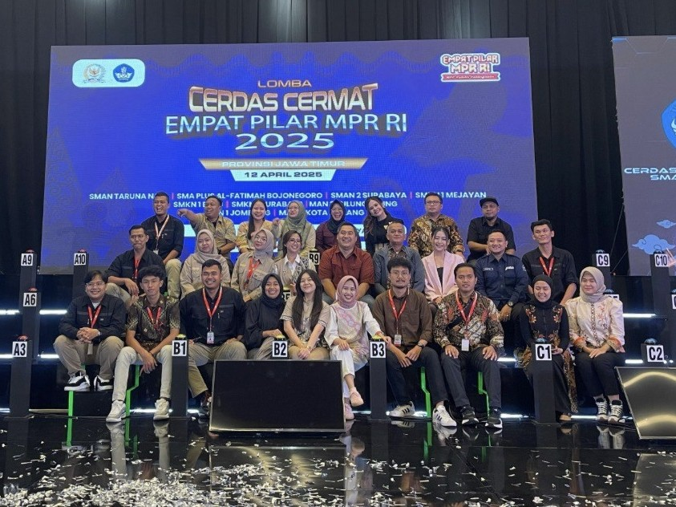
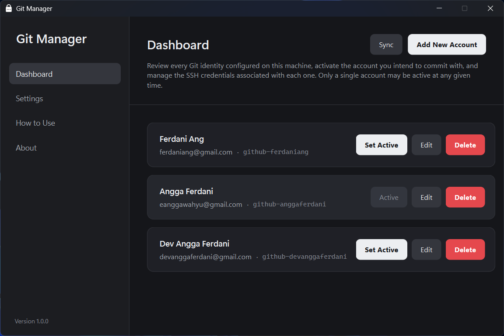
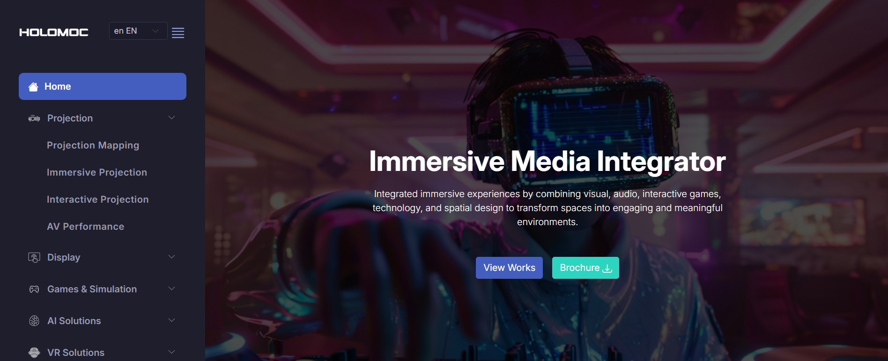
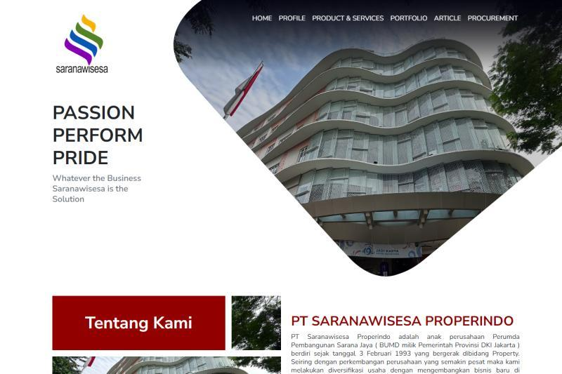
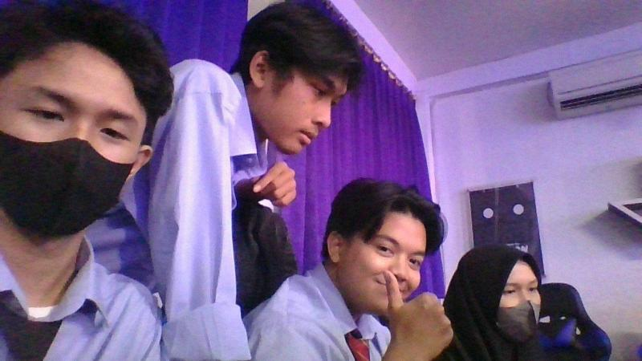

@anggaferdani
Saya Angga Ferdani, Full Stack Web Developer dengan pengalaman mengembangkan aplikasi web secara end-to-end, mulai dari frontend, backend, database, hingga deployment. Memiliki ketertarikan terhadap teknologi dan pengembangan produk digital, serta selalu berusaha meningkatkan kemampuan dengan mempelajari teknologi dan pendekatan baru.
Work Experience
Spero Mahakarya Nusantara
-
Web Developer — Internship
Sep 2022 – Mar 2023
Terlibat dalam pengembangan aplikasi web, mencakup frontend, backend, deployment, serta perbaikan bug dan maintenance aplikasi.
-
Full Stack Web Developer — Full Time
Mar 2023 – Present
Mengembangkan berbagai aplikasi web dan sistem digital secara end-to-end, mencakup frontend, backend, database, deployment, serta integrasi API, layanan pihak ketiga, dan perangkat IoT. Berpengalaman dalam optimasi pengelolaan data skala besar melalui indexing database dan peningkatan performa query.
Projects
-
Empat Pilar MPR RI Competition System
Mengembangkan sistem kompetisi berbasis web untuk Empat Pilar MPR RI dengan komunikasi real-time, integrasi perangkat IoT, mode offline, serta sinkronisasi tombol buzzer dan skor.






-
Mengembangkan tool untuk mengelola dan berganti akun Git pada satu komputer, sehingga pengguna dapat melakukan commit dan push menggunakan konfigurasi akun yang berbeda.

-
Persona UMKM
Mengembangkan platform berbasis AI yang membantu UMKM mengidentifikasi identitas merek serta mengembangkan produk melalui pembuatan konten, tag, dan deskripsi yang mengikuti tren secara otomatis.

-
Mengembangkan website e-commerce ikan koi dengan integrasi payment gateway, WhatsApp API, dan layanan pengiriman. Sistem mendukung pembelian ikan dan pakan, online auction, event lottery, serta pembaruan data secara real-time.

-
Mengembangkan sistem live auction ikan koi berbasis offline untuk mendukung proses lelang dan sinkronisasi data secara real-time.
-
PAR Call Center
Mengembangkan sistem call center PT Prima Armada Raya dalam mengelola laporan, keluhan, dan permintaan layanan pelanggan.


-
Smart Attendance
Mengembangkan sistem absensi berbasis lokasi PT Guna Cipta Kreasi yang memastikan karyawan hanya dapat melakukan absensi dalam radius lokasi yang telah ditentukan.
-
Holomoc Indonesia Company Profile
Mengembangkan website company profile PT Holomoc Indonesia dengan optimasi SEO.

-
Hangout Project
Mengembangkan platform website MIXNETWORK yang menyediakan informasi terbaru mengenai tempat hangout populer, seperti kafe, ruang publik, serta berbagai event menarik.
-
Saranawisesa Properindo Company Profile & E-Procurement
Mengembangkan website company profile dan e-procurement PT Saranawisesa Properindo dalam mendukung informasi perusahaan, layanan, proyek properti, serta proses pengadaan.

-
Bank BTN Registration System
Mengembangkan sistem registrasi untuk event anniversary Bank BTN dengan fitur QR Code untuk proses registrasi dan verifikasi kehadiran peserta.
-
Battle Management System
Mengembangkan sistem manajemen pertempuran berbasis web dengan dashboard untuk monitoring dan kontrol secara real-time, serta peta interaktif untuk penandaan posisi dan pelacakan personel.

-
Motion H2
Mengembangkan dashboard monitoring distribusi PT Astra Honda Motor untuk memantau dan mengelola data distribusi secara terpusat.
-
Reporting System
Mengembangkan sistem reporting untuk PT Mega Sarana Satelit dalam mengelola data laporan secara terstruktur.

-
Sarana Teknologi Komunikasi Company Profile
Mengembangkan website company profile PT Sarana Teknologi Komunikasi untuk menampilkan informasi perusahaan dan layanan yang ditawarkan.
-
UMKM Level Up Landing Page
Mengembangkan landing page program UMKM Level Up KOMINFO sebagai media informasi dan promosi program.
-
School Facilities Management System
Mengembangkan sistem manajemen fasilitas sekolah untuk mengelola data, pemeliharaan, dan penggunaan fasilitas secara terpusat.

-
Silatnas 2022 Registration System
Mengembangkan sistem registrasi peserta untuk event Silatnas 2022 Asosiasi Rental Indonesia dengan fitur pendaftaran dan verifikasi kehadiran.
-
UMKM Monitoring Dashboard
Mengembangkan dashboard untuk Dinas Perdagangan Kota Surakarta dalam memantau dan mengelola data UMKM secara terpusat.
-
Sismamedikal Learning Management System
Mengembangkan platform learning management untuk PT Sismadi Mancorpindo yang mendukung pengelolaan materi, pembelajaran, kelas, dan peserta.
-
3D Skull
Mencoba membuat objek tengkorak 3D dengan mengeksplorasi bentuk detail dan struktur dari model yang dibuat.
-
Pelajar Digital Learning Management System
Mengembangkan platform learning management PT Holomoc Indonesia yang mendukung pengelolaan materi, pembelajaran, kelas, dan peserta.
-
Indo Defence 2022 Expo & Forum Registration System
Mengembangkan sistem registrasi peserta untuk event Indo Defence 2022 Expo & Forum dengan fitur pendaftaran dan pengecekan kehadiran.
-
Niaga Inti Kokoh Company Profile
Mengembangkan website company profile PT Niaga Inti Kokoh untuk menampilkan informasi perusahaan, layanan, dan produk yang ditawarkan.
-
Spero ERP & Smart Attendance
Mengembangkan sistem ERP dan smart attendance PT Spero Mahakarya Nusantara yang saling terintegrasi untuk mendukung pengelolaan operasional dan absensi karyawan.
-
Roblox Motion Tracking
Menerapkan gerakan dari video ke karakter Roblox menggunakan motion tracking dan rigging, sehingga gerakan karakter dapat mengikuti gerakan yang terdapat pada video.
-
Web-Based 3D Aquarium Simulation
Membuat simulasi aquarium 3D berbasis web dengan model ikan beranimasi, dekorasi lingkungan, serta konfigurasi untuk mengatur material dan statistik pada aquarium.
-
Roblox Terrain Generation
Melakukan eksperimen procedural terrain generation di Roblox untuk membuat terrain secara otomatis dengan bentuk dan lingkungan yang dapat disesuaikan.
-
Procedural Inverse Kinematics
Mencoba menerapkan procedural inverse kinematics pada animasi karakter di game FPS untuk membuat pergerakan karakter yang lebih dinamis dan responsif.